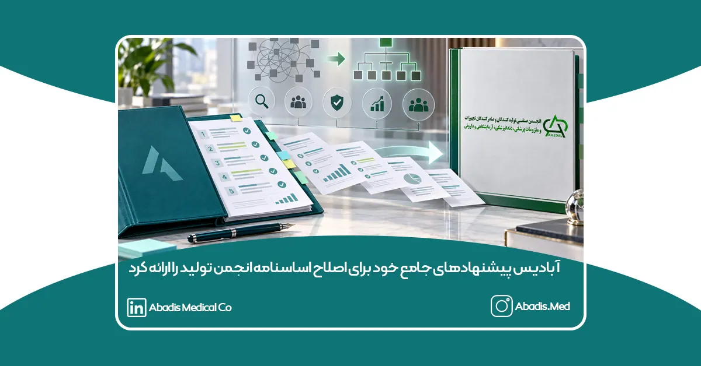

شرکت دانشبنیان مخازن طبی آبادیس، در پاسخ به فراخوان انجمن صنفی کارفرمایی تولیدکنندگان و صادرکنندگان تجهیزات و ملزومات پزشکی، دندانپزشکی، آزمایشگاهی و دارویی، مجموعهای جامع از پیشنهادهای اصلاحی خود را با هدف تقویت مشارکت اعضا، صیانت از حق رأی تولیدکنندگان واقعی، افزایش شفافیت و بهبود ساختار حکمرانی انجمن ارائه کرد.
آبادیس پیش از این، طی نامهای رسمی و با اشاره به نبود شفافیت و پاسخگویی کافی، ضعف در نتیجهمحوری و کاهش اعتماد اعضا، تصمیم خود مبنی بر عدم تمدید عضویت و انصراف از ادامه حضور در انجمن را اعلام کرده بود.
بااینحال، پس از تماسها و اصرار تعدادی از اعضای هیئتمدیره و مسئولان انجمن برای ادامه حضور و مشارکت آبادیس در مسیر اصلاح، این شرکت با امید به فراهمشدن زمینه تغییرات واقعی و ساختاری، همچنان عضو انجمن باقی ماند و تصمیم گرفت بار دیگر مسیر گفتوگو و اصلاح از درون را دنبال کند.
تداوم عضویت آبادیس به معنای عدول از نقدهای گذشته نیست؛ بلکه نشاندهنده مسئولیتپذیری این شرکت در قبال صنف و فراهمکردن فرصتی دوباره برای اصلاح ساختارها، بازسازی اعتماد اعضا و افزایش اثربخشی انجمن است.
در پیشنهادهای ارائهشده، موضوعاتی از جمله عضویت فراگیر فعالان صنعت، اختصاص حق رأی و حق نامزدی به تولیدکنندگان دارای پروانه بهرهبرداری و پروانه تولید معتبر، اجرای اصل «هر گروه اقتصادی، یک رأی»، جلوگیری از تجمیع و مهندسی آرا از طریق شرکتهای وابسته، تعیین نمایندگان مجاز شرکتها، شفافسازی فهرست واجدان رأی، تشکیل کمیته مستقل انتخابات، اصلاح نصاب مجامع، شفافیت مالی، مدیریت تعارض منافع و تضمین حقوق اعضا مورد توجه قرار گرفته است.
شرکت دانشبنیان مخازن طبی آبادیس امیدوار است فراخوان اصلاح اساسنامه، آغازگر تغییری واقعی و قابلاندازهگیری در انجمن باشد و پیشنهادهای اعضا پس از بررسی کارشناسی، به تصمیمات اجرایی و اصلاحات مؤثر منتهی شود.
آبادیس همچنان آرزومند شکلگیری انجمنی شفاف، پاسخگو، مستقل، فراگیر و قدرتمند است؛ انجمنی که صدای همه اعضا را بشنود و بتواند با اتکا به اعتماد و مشارکت تولیدکنندگان واقعی، از منافع صنعت تجهیزات پزشکی کشور دفاع کند.
برای مشاهده پیشنهاد های آبادیس به اصلاح اساسنامه به این لینک مراجعه نمایید.